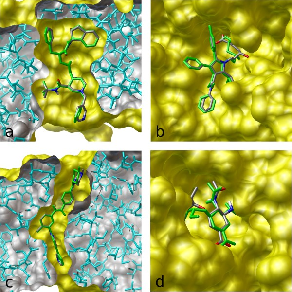

Columbia PhD, co-winner of the most well-funded ML competition ever, creator of the most cited molecular docking program.
Based in San Diego, CA.
Email: trott@caa.columbia.edu | LinkedIn | Substack | X
I'm working on something truly awesome. Meanwhile...

The most popular molecular docking program – used by scientists looking for new drugs to treat various diseases: from cancer and diabetes to cardiovascular and infectious diseases. It predicts how a drug-like molecule would bind to its target.
It is now the most cited docking program, with 30,000 citations. This is comparable to the citations the AlphaFold and the GPT-3 papers got so far, for example.
I built this program in 1.5 years, and it was 60x faster, while being more accurate than my employer’s previous creation. The archive of the original site has the details. (May take a while to load the images.)
The approach used machine learning: Training its "energy" function involved bi-level optimization, like meta-learning.
A computer vision model for airport security scanners (the ones you go through before boarding a flight).
This was part of the AI competition with the largest single prize pool ever: $1,500,000, so many teams put in a lot of effort. I was one of the 8 winners, placing 5th out of the 518 stage-1 teams (99th percentile).
The DHS mentions me in their news release: www.dhs.gov/science-and-technology/news/2018/07/09/news-release-st-announces-winners-15m-prize-competition
Possibly the cleverest thing I've done: I discovered how to quickly get perfect scores during "normal" AI competitions. Previous perfect scores there were seen only in some very unusual circumstances.
At first, people thought this was a computer hack, bug, or data leak. But it was an algorithmic trick: www.kaggle.com/code/olegtrott/the-perfect-score-script/
Later, another researcher (formerly at Harvard) independently came up with his own (rather complex) approach, but could only learn 5.2 labels per submission, compared to my 15: cdn.aaai.org/ocs/ws/ws0421/16161-75972-1-PB.pdf
PhD thesis: Protein Dynamics and Its Prediction Using Machine Learning, Columbia University (2004)
Trained neural networks before it was cool :-)